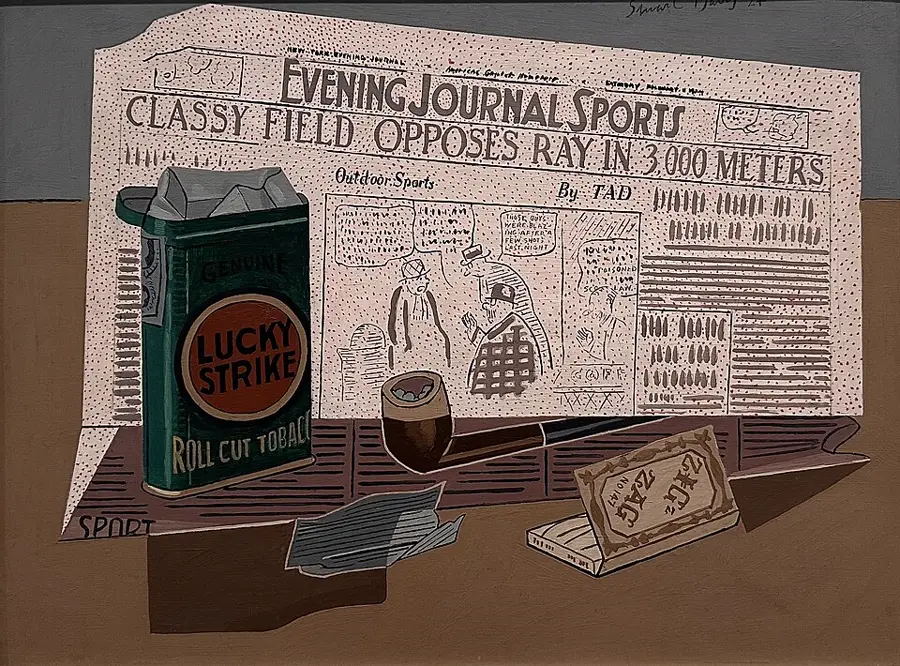
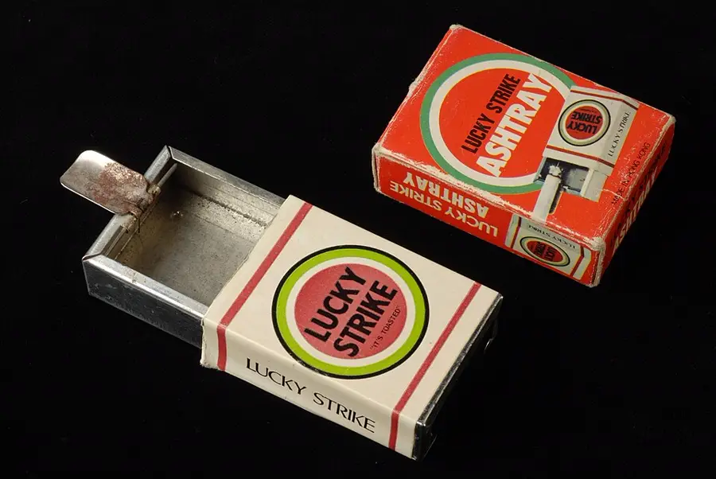

대표 로고대표 브랜드 마크
대표 로고대표 브랜드 마크럭키 스트라이크 Lucky Strike
럭키 스트라이크(Lucky Strike)는 브리티시 아메리칸 토바코 그룹이 소유한 미국의 담배 브랜드이다. 개별 담배는 흔히 '럭키스'라는 애칭으로 불린다.
최종 업데이트
럭키 스트라이크는 어떤 브랜드인가
럭키 스트라이크는 미국 버지니아주 리치먼드에서 시작된 담배 브랜드로, 씹는담배에서 궐련으로 성장했다. 브랜드명은 당시 골드러시에서 영감을 받아 최고급 블렌드를 연상시키도록 지어졌다.
1917년에는 담뱃잎을 볕에 말리는 대신 토스팅하는 제조법을 내세운 'It's Toasted' 슬로건을 선보여 경쟁사와 차별화를 꾀했다. 1920년대부터 라디오 프로그램 후원과 유명인 광고를 통해 대중적 인지도를 쌓았고, 이후 할리우드 배우들을 광고 모델로 기용하며 마케팅을 이어갔다.
브랜드의 상징이었던 짙은 녹색 포장은 이후 흰색으로 바뀌었다. 현재는 브리티시 아메리칸 토바코 그룹 소속 브랜드로 이어지고 있다.
럭키 스트라이크는 어떻게 시작되고 성장했나
럭키 스트라이크는 1871년 미국 버지니아주 리치먼드의 R. Patterson사가 당밀로 뭉친 씹는담배인 컷 플러그 담배 브랜드로 처음 선보였다.
이후 1900년대 초 궐련 형태로 발전했다. 브랜드명은 당시 골드러시 붐에서 착안해 최고급 블렌드라는 인상을 주기 위해 지어졌다.
1905년 아메리칸 토바코 컴퍼니(American Tobacco Company)가 이 브랜드를 인수하면서 사업이 확장됐다.
럭키 스트라이크의 브랜드 아이덴티티는 무엇인가
럭키 스트라이크는 담뱃잎을 토스팅하는 제조법을 내세운 'It's Toasted' 슬로건과 유명인 광고를 앞세운 마케팅으로 다른 담배 브랜드와 차별화됐다.
럭키 스트라이크의 대표 제품과 서비스는 무엇인가
럭키 스트라이크의 핵심 제품은 궐련 담배이며, 1917년부터는 담뱃잎을 볕에 말리는 대신 토스팅하는 제조 방식을 내세운 'It's Toasted' 슬로건으로 제품의 차별성을 알렸다. 브랜드는 라디오 프로그램 후원과 유명인 광고 등 마케팅 활동을 제품 홍보의 중요한 축으로 삼았다.
짙은 녹색이었던 패키지 디자인은 이후 흰색으로 변경됐다.
럭키 스트라이크 로고는 어떻게 변해왔나
대표 로고대표 브랜드 마크사진으로 보는 럭키 스트라이크의 역사


자주 묻는 질문
럭키 스트라이크는 어느 나라 브랜드인가요?
럭키 스트라이크는 미국의 브랜드·비즈니스 브랜드입니다.
럭키 스트라이크는 언제 설립되었나요?
럭키 스트라이크는 1871년 설립되었습니다.
럭키 스트라이크의 브랜드 아이덴티티는 무엇인가요?
럭키 스트라이크는 담뱃잎을 토스팅하는 제조법을 내세운 'It's Toasted' 슬로건과 유명인 광고를 앞세운 마케팅으로 다른 담배 브랜드와 차별화됐다.
럭키 스트라이크의 대표 제품은 무엇인가요?
럭키 스트라이크의 핵심 제품은 궐련 담배이며, 1917년부터는 담뱃잎을 볕에 말리는 대신 토스팅하는 제조 방식을 내세운 'It's Toasted' 슬로건으로 제품의 차별성을 알렸다.
럭키 스트라이크의 공식 웹사이트는 어디인가요?
럭키 스트라이크의 공식 웹사이트는 https://www.luckystrikeny.com/ 입니다.
출처와 검증
럭키 스트라이크 관련 참고: 공식 웹사이트 · 위키데이터 Q753556 · 한국어 위키백과 · 영어 위키백과. 브랜드명은 한글과 원어를 함께 표기하되 데이터에 없는 표기는 만들지 않습니다. 기원 국가·설립연도는 검수된 정의문에서 확인된 값을 우선하고, 없을 때만 공식 웹사이트 URL이 일치하는 위키데이터 개체의 값을 씁니다. 웹 첫 보관은 인터넷 아카이브가 공식 사이트 첫 화면을 처음 보관한 날로, 사이트 개설일과 다를 수 있습니다. 위키데이터 값은 2026-09-27 기준입니다.